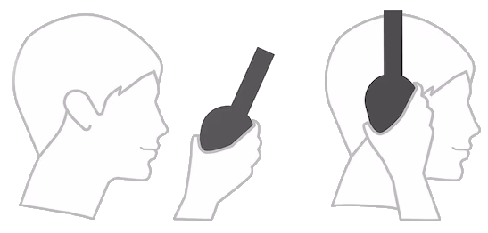
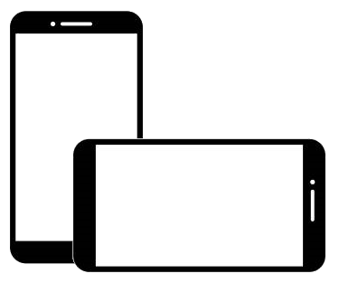
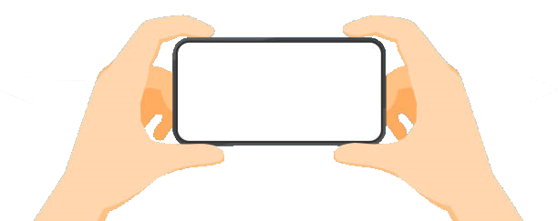

Instruktions
This website is mainly made for mobile devices
1. Put on binaural Headphones and connect them
(most headphones are binaural)
(binaural means they can distinguish between left and right)
2. Rotate your phone into landscape mode
3. Hold the phone in front of you and turn yourself left and right
4. You should feel like you're at a festival
The music always sounds like it's coming from the stage
(Could make some Problems with Apple Devices)